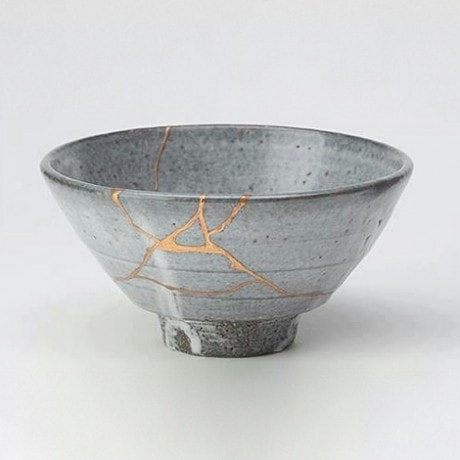

BETTER THAN BEFORE
by SHIVKI
Posted on March 2, 2019 at 03:00PM

YOU may have heard of ‘Make-Do’ antiques before, old objects with homemade repairs that have been stapled, stitched and coaxed back to life. But as avid admirers of timeworn objects we think the term ‘Make-Do’ might not do at all. It implies a temporary fix or a result that isn’t as effective or attractive as the original design. These thoughtful repairs however, often add an element of beauty and interest. They show an object’s history and prove that they were once needed or loved enough to take the time to mend.Plates, bowls and glassware often carry great examples of antique repair. From ironstone platters to fine Chinese plates, broken pieces could be fitted and fused back together with a train track of handmade staples. These staples, or braces, were made to fit particular breaks and cracks and were sometimes made into decorative shapes. A dedicated metalsmith might use flat pieces of metal cut to resemble a heart or a scepter. Each shape would also have a short pin attached, which passed through small holes drilled into the broken object. The result of this process could bring a dish back to life and perhaps more importantly create a completely unique object bordering on folk art.
Some of the most visually stunning fixes are found in the Japanese art of Kintsugi, repairing broken pottery with lacquer resin mixed with powdered gold, silver or platinum. The process binds the pieces back together and creates an effect of thin golden veins throughout the object.
The list of Make-Do’s goes on and on. For centuries people have found inventive ways to fix the tools and treasures that are important to their way of life. Though the population of fixers and tinkerers has declined over the years, we see a resurgence of do-it-yourselfers from time to time. We find beauty in these once broken objects and try to learn from their owner’s ingenuity. One of the leaders in preserving and documenting repaired objects is Andrew Baseman. An interior designer and author from New York City, Mr. Baseman collects and cherishes all kinds of repaired antiques and like us, finds incredible value in artful reconstruction. To learn more about his collection and its history check out his blog, ‘Past Imperfect’ over at www.andrewbaseman.com.